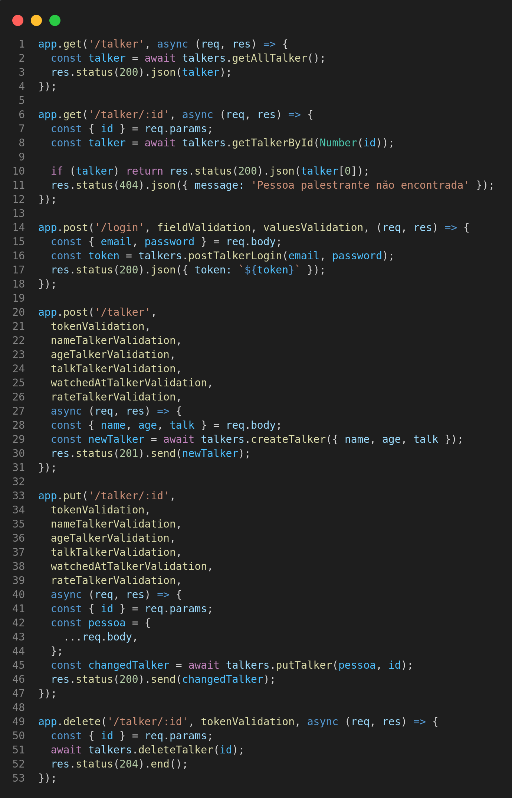

Aqui, é possível visualizar o projeto em pleno funcionamento e explorar suas principais funcionalidades por meio de gifs e printscreens. Caso deseje experimentar o projeto em sua própria máquina, basta selecionar a opção "GITHUB" no menu superior, onde encontrará um tutorial detalhado sobre a instalação do projeto em seu ambiente local. Lembre-se de me contar o que achou do projeto, ficaria imensamente feliz em receber o seu feedback. Ou caso tenha alguma dúvida sobre o projeto, você pode clicar em "DUVIDAS" e me mandar uma mensagem diretamente ou ir em HOME, lá você encontra todas as minhas redes sociais.
O projeto "Talker Manager" é um sistema de gerenciamento de palestrantes e suas respectivas palestras desenvolvido no início do meu aprendizado sobre APIs. O sistema tem como objetivo permitir que os organizadores de eventos gerenciem facilmente informações sobre palestrantes e palestras, incluindo dados pessoais dos palestrantes e a data do evento. O projeto foi desenvolvido utilizando tecnologias como Node.js, Express, módulo fs entre outras tecnologias. Os usuários podem se autenticar no sistema e realizar operações como criar, atualizar e excluir informações de palestrantes e palestras.
Para mostrar o devido funcionamento do projeto, eu utilizo o Thunder Client, que é uma extensão para o Visual Studio Code que permite realizar solicitações HTTP diretamente do editor de código. Com essa ferramenta, eu consigo testar APIs e rotas sem a necessidade de um navegador ou de outras ferramentas externas. Para conhecer mais sobre o Thunder Client, clique aqui.
Eu utilizei o Docker para criar um ambiente isolado para minha aplicação Node.js.
Com o Docker Compose, eu empacotei minha aplicação e todas as suas dependências em
containers, permitindo que eles fossem configurados e executados juntos.
Para usar o Docker Compose, eu criei um arquivo docker-compose.yml, que é um
arquivo de configuração que especifica todos os serviços necessários para minha
aplicação. Cada serviço é definido em seu próprio container, com suas próprias
configurações e dependências. O serviço da aplicação Node.js usou uma imagem
baseada em Node.js, com o código-fonte da minha aplicação sendo montado como um
volume.
Eu executei o comando docker-compose up para iniciar o container no docker-compose.yml.
Isso iniciou minha aplicação Node.js.
Usando o Docker Compose, eu pude empacotar minha aplicação e suas dependências em um container isolado, garantindo que ela funcionasse da mesma forma em qualquer ambiente. Além disso, o Docker Compose me permitiu configurar facilmente vários serviços e iniciar todos eles com apenas um comando, tornando o processo de configuração e execução da minha aplicação muito mais fácil e eficiente. Para conhecer mais sobre o Docker, clique aqui.
Na página principal do projeto, é possível encontrar uma estrutura completa dos endpoints, onde é disponibilizado um CRUD abrangente. Além disso, há a presença de middlewares específicos para a verificação de erros e para validar os dados enviados pelos usuários. Essa estruturação dos endpoints permite uma fácil interação com o sistema, e garante a eficiência no processamento dos dados. Já os middlewares presentes, além de aumentar a segurança da aplicação, garantem que todas as informações enviadas pelos usuários estejam em conformidade com as especificações exigidas pelo sistema. Todas essas funcionalidades foram implementadas com o objetivo de proporcionar uma experiência de uso agradável e segura para os usuários do sistema.
Como você pode ver, existem vários middlewares de verificação no código acima, um deles é middleware tokenValidation. que é basicamente uma função que valida um token de autorização em uma requisição HTTP. Ao fazer login o usuário manda informações para o sistema como email e password, na qual os mesmo também passam por uma verificação dos campos através dos seus respectivos middlewares. Se os campos estiverem de acordo, é gerado um token para o usuário, na qual o mesmo também é retornado. Acompanhe abaixo o funcionamento:
Ao fazer login, o usuário pode utilizar o token gerado para fazer requisição em outra rota, como cadastrar um palestrantes usando o método POST. Ao requisitar a rota para cadastrar um palestrante, ela passa por uma verificação do token através do middleware tokenValidation. A primeira coisa que essa função faz é extrair o token de autorização do cabeçalho da requisição, usando a propriedade authorization do objeto headers de req. Se o token não for encontrado, a função retorna um erro com um status 401 (Não autorizado) e uma mensagem de erro "Token não encontrado".
Se o token for encontrado, a função verifica se ele é uma string válida e tem pelo menos 16 caracteres de comprimento. Se o token não for válido, a função retorna outro erro com o mesmo status 401 e uma mensagem de erro "Token inválido". Observe abaixo a função completa:
Se o token for válido, a função chama a função next() para passar o controle para a próxima função na cadeia de middlewares. Então, resumindo, essa função tokenValidation é uma função de middleware que valida um token de autorização em uma requisição HTTP, retornando um erro se o token não for encontrado ou for inválido, ou passando o controle para a próxima função na cadeia de middlewares se o token for válido. Com isso, as outras rotas podem ser chamadas normalmente, como por exemplo a rota que retorna todos os palestrantes, observe no GIF abaixo:
Todo o CRUD completo do projeto tem suas respectivas funções no arquivo talkers.js do projeto. No arquivo existe funções de leitura e escrita usando o módulo fs, que é um módulo integrado do Node.js que me permite interagir com o sistema de arquivos do meu sistema operacional. Ele me permite criar, ler, gravar, atualizar e excluir arquivos e diretórios.
Com o fs, eu posso usar funções como readFile() para ler o conteúdo de um arquivo e writeFile() para gravar conteúdo em um arquivo. Abaixo você pode ver as funções de leitura e escrita do meu projeto:
Esse é um geral do meu projeto, um projeto simples, contudo, bem executado. tenho outro projeto com estrutura de organização melhor. Como eu falei no início, essa é apenas a minha primeira API criada ao longo de toda a minha carreira acadêmica. Caso você queira ver melhor o projeto, assim como outras funções que eu não mostrei nesse resumo, volto a convidar você para visitar esse projeto no github, clicando aqui ou na opção GITHUB no menu dessa página.